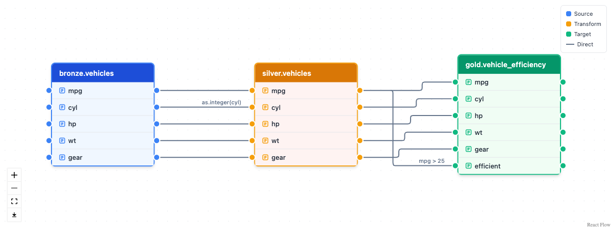

ducklake is an R package that brings versioned data lake infrastructure to data-intensive workflows. Built on DuckDB and DuckLake, it provides ACID transactions, automatic versioning, time travel queries, and complete audit trails.
Why DuckLake?
Many industries rely on flat-file workflows (CSV, XPT, Excel, etc.) that create significant data management challenges:
- Disconnected flat files: Related datasets stored as separate files despite being inherently relational
- Lost audit trails: No automatic tracking of who changed what and when
-
Version control gaps: Multiple dataset versions scattered across folders with unclear provenance
- Reproducibility issues: Inability to recreate analyses from specific time points
- Collaboration friction: Multiple analysts working with different versions of the same data
- Compliance challenges: Difficulty demonstrating data integrity and audit trails for regulated industries
DuckLake solves these problems by implementing a versioned data lake architecture that:
- Preserves relational structure between related datasets
- Automatically versions every data change with timestamps and metadata
- Enables time travel to recreate analyses exactly as they were run
- Provides complete audit trails with author attribution and commit messages
- Supports layered architecture (bronze/silver/gold) for data lineage from raw to analysis-ready
- Allows multiple team members to collaborate safely with shared data
Installation
install.packages("ducklake")Development version
pak::pak("tgerke/ducklake-r")ducklake requires the duckdb R package version 1.5.5 or newer. DuckDB 1.5.2 is the release that ships the stable DuckLake 1.0 specification, and duckdb 1.5.5 is where the R package settled how it stores downloaded extensions, which ducklake relies on.
DuckLake itself ships as a DuckDB extension. attach_ducklake() downloads it the first time it is needed and says where it put it, so there is no install step. In an interactive session, duckdb offers to create ~/.duckdb the first time it connects; say yes and the download happens once per machine rather than once per session. Scripts and CI jobs get the same by setting DUCKDB_R_HOME in ~/.Renviron or the job’s environment. install_ducklake() fetches the extension ahead of time, for container images and machines that are offline when the lake is attached, and ducklake_extension_available() reports whether it is already there.
ducklake manages its own DuckDB connection, so there is nothing to set up: just attach_ducklake() and go. If you prefer to supply your own connection (for example, one shared with other DBI-based tools), register it with set_ducklake_connection().
Quick start: a layered lake
The medallion pattern organizes a lake in layers: bronze holds data exactly as it arrived, silver holds the cleaned and standardized version, and gold holds the tables an analysis reads. This session builds one table per layer and follows the same steps as the Getting Started article: attach a lake, add tables, read them, change one, look at the history, detach.
Attach a lake
One call opens a lake, and creates it first when nothing is at the path yet. By default the catalog is a DuckDB file stored next to the data. A lake that several people write to keeps its catalog in SQLite or PostgreSQL instead, and Choosing a Deployment walks through that choice.
Load the raw layer
Each layer gets a schema of its own. That keeps bronze.vehicles, silver.vehicles, and gold.vehicle_efficiency one lineage under three roofs, and lets access to raw data be restricted at the schema level.
with_transaction({
create_schema("bronze")
create_schema("silver")
create_schema("gold")
}, author = "Data Engineer", commit_message = "Create medallion layers")
#> Created schema "bronze".
#> Created schema "silver".
#> Created schema "gold".
#> Committed snapshot 1 (Data Engineer): Create medallion layers
with_transaction(
create_table(mtcars, "bronze.vehicles"),
author = "Data Engineer",
commit_message = "Initial load of raw vehicle data"
)
#> Committed snapshot 2 (Data Engineer): Initial load of raw vehicle dataEvery write to a lake is a commit. with_transaction() makes the commit explicit: everything inside it lands as one snapshot, with a record of who made the change and why, and it all rolls back if any step fails. The confirmation names the snapshot, and the history section below uses that number to look back.
Derive the cleaned and analysis-ready layers
A dplyr pipeline on a lake table is a query. Ending it with create_table() runs the query inside DuckDB and writes the result straight into the lake, so the rows never pass through R. Each pipeline is kept in a variable here, because the recipe that builds a layer is also its lineage, which the last section draws.
silver <- get_ducklake_table("bronze.vehicles") |>
select(mpg, cyl, hp, wt, gear) |>
mutate(cyl = as.integer(cyl))
with_transaction(
create_table(silver, "silver.vehicles"),
author = "Data Engineer",
commit_message = "Clean and standardize vehicle data"
)
#> Committed snapshot 3 (Data Engineer): Clean and standardize vehicle data
gold <- get_ducklake_table("silver.vehicles") |>
mutate(efficient = mpg > 25)
with_transaction(
create_table(gold, "gold.vehicle_efficiency"),
author = "Data Analyst",
commit_message = "Flag efficient vehicles"
)
#> Committed snapshot 4 (Data Analyst): Flag efficient vehicles
list_ducklake_tables()
#> schema_name table_name type
#> 1 bronze vehicles table
#> 2 gold vehicle_efficiency table
#> 3 silver vehicles tableRead a table
get_ducklake_table() returns a lazy table. The dplyr verbs you pipe onto it become SQL that DuckDB runs against the lake, and collect() brings the result into R. Filter, select, and summarize before you collect, so DuckDB does the work and only the result reaches R.
get_ducklake_table("gold.vehicle_efficiency") |>
count(cyl, efficient) |>
arrange(cyl, efficient) |>
collect()
#> # A tibble: 4 × 3
#> cyl efficient n
#> <int> <lgl> <dbl>
#> 1 4 FALSE 5
#> 2 4 TRUE 6
#> 3 6 FALSE 7
#> 4 8 FALSE 14Rebuild a layer
When the cleaning logic changes, a layer is rewritten from a pipeline rather than re-extracted from the source system. replace_table() does that as one versioned change, and the version before the rewrite stays readable.
with_transaction(
get_ducklake_table("silver.vehicles") |>
mutate(gear = as.integer(gear)) |>
replace_table("silver.vehicles"),
author = "Data Engineer",
commit_message = "Add gear type conversion to silver layer"
)
#> Committed snapshot 5 (Data Engineer): Add gear type conversion to silver layerModifying Tables covers the other ways to change a table: rows_insert(), rows_update(), and rows_delete() for specific rows, rows_upsert() and merge_into() for batches, and ducklake_exec() for changing rows in place. All of them are versioned in the same way.
See the history
list_table_snapshots() lists every commit in the lake, across all layers. The ids are the ones the confirmations printed, and snapshot 0 is the lake’s creation.
list_table_snapshots() |>
select(snapshot_id, author, commit_message)
#> snapshot_id author commit_message
#> 1 0 <NA> <NA>
#> 2 1 Data Engineer Create medallion layers
#> 3 2 Data Engineer Initial load of raw vehicle data
#> 4 3 Data Engineer Clean and standardize vehicle data
#> 5 4 Data Analyst Flag efficient vehicles
#> 6 5 Data Engineer Add gear type conversion to silver layerAny earlier version of a table can be read as a lazy table. Here is the silver layer as it was at snapshot 3, before the rebuild:
get_ducklake_table_version("silver.vehicles", version = 3) |>
select(mpg, cyl, gear) |>
head(3) |>
collect()
#> # A tibble: 3 × 3
#> mpg cyl gear
#> <dbl> <int> <dbl>
#> 1 21 6 4
#> 2 21 6 4
#> 3 22.8 4 4Time Travel covers reading a table as of a timestamp, comparing versions, restoring one, and pinning a whole session to a snapshot.
Detach
detach_ducklake("my_data_lake")Detaching deletes nothing. It releases the lock DuckDB holds on the catalog file, so another session or a backup can open the lake. Attaching the same path again picks up where you left off, history included.
Column-level lineage with dplyneage
ducklake records lineage at the table level: which tables each snapshot touched, and why. The companion package dplyneage traces lineage within a query, from each output column back to the source columns it came from. Lake tables are ordinary dbplyr lazy tables, so the pipelines that built the silver and gold layers above are also their lineage recipes. Pass them to extract_lineage() under the names they were materialized as, and it stitches the layers into one graph:
library(dplyneage)
lake_lineage <- extract_lineage(list(
"silver.vehicles" = silver,
"gold.vehicle_efficiency" = gold
))
lineage_flow(lake_lineage, height = "450px")
bronze.vehicles feeds silver.vehicles, which feeds gold.vehicle_efficiency. A column that passes through unchanged connects with a plain edge. A column a pipeline computes carries its expression as a label, with as.integer(cyl) on the way into silver and mpg > 25 on the way into gold. In an R session the diagram is interactive: drag tables, zoom, hover a column for its type and label, click one to isolate everything upstream and downstream of it. The same lineage answers impact questions as data:
lineage_upstream(lake_lineage, "gold.vehicle_efficiency.efficient")
#> [1] "bronze.vehicles.mpg" "silver.vehicles.mpg"Lineage reads the structure of a pipeline, not its data, which is why this works after the lake was detached. dplyneage’s ducklake lineage article draws one diagram per layer and extracts lineage from time-travel queries. Its lineage that travels with the data article stores each layer’s lineage on the commit that wrote it, through commit_extra_info, so a snapshot’s rows and their derivation come back together.
Learn more
Check out the pkgdown site for detailed vignettes:
- Getting Started - Attach a lake, add a table, read it back, change it, and see its history
- Loading Data - Files, URLs, pipelines, schemas, Parquet in place, and migrating from DuckDB or Iceberg
- Choosing a Deployment - Which catalog, where the data goes, who can reach it, and what to set up on day one
- Clinical Trial Data Lake - SDTM to ADaM with admiral, analysis results in the lake, and column lineage
-
Modifying Tables - Choosing how to change a table: joins vs.
rows_*, upserts,merge_into(), andreplace_table() - Views, Comments, and Labels - Shared query logic and documentation that live in the lake
- Data Inlining - Streaming-friendly small writes
- Transactions - ACID transaction support
- Time Travel - Query and restore historical data
- Storage and Backups - Back up and recover your lake
- Visualizing Your Lake - Plot snapshot history, change volume, and storage layout
- Quack Remote Access - Share a DuckLake over the network with the Quack protocol
Key features
- Versioned data lake: Every data change automatically tracked with timestamps and metadata
- Multi-backend catalogs: Use DuckDB (default), PostgreSQL, SQLite, or MySQL as the catalog database — enables concurrent multi-client access with PostgreSQL or SQLite (DuckLake 1.0 spec)
- Remote access over Quack: Serve a DuckLake to other R sessions over the network and let several people read and write it at once, using DuckDB’s Quack protocol
- Lightweight snapshots: Create unlimited snapshots without frequent compacting steps
- Medallion architecture: Bronze/silver/gold layers for data lineage and quality
-
ACID transactions: Atomic updates with concurrent access and transactional guarantees over multi-table operations;
set_ducklake_retry()tunes how DuckLake retries transactions that race with another writer -
Time travel: Query data exactly as it existed at any point in time—essential for reproducibility. Pin a whole session to a snapshot with
attach_ducklake(snapshot_version = ...) -
Performance-oriented: Uses Parquet columnar storage with statistics for filter pushdown, enabling fast queries on large datasets. Partitioning (
set_table_partitioning()) and sorted tables (set_table_sorting()) prune files on large tables -
Migrate Parquet in place:
add_data_files()registers existing Parquet files with the lake without copying or rewriting them -
Cloud storage: Keep data files on S3, GCS, R2, or Azure —
create_storage_secret()handles credentials -
Tunable:
set_ducklake_option()adjusts DuckLake’s persisted settings (compression, file sizes, commit-message policy) at lake, schema, or table scope -
Schema evolution in place:
add_table_column(),drop_table_column(),rename_table_column(),set_column_type(), andrename_ducklake_table()change a table’s shape as metadata-only operations — no data rewrite, and every earlier schema stays reachable through time travel -
Variable labels survive the lake:
create_table()stores haven/labelled column labels as catalog comments andcollect()restores them, so gtsummary and gt keep displaying them;set_table_comment(),set_column_comments(), andget_table_comments()manage documentation any client of the lake can read -
Views:
create_view()stores a dplyr pipeline as a SQL view in the lake — shared logic that always reads current data;list_ducklake_tables()shows what’s there -
Schemas: Organize layers or studies with
create_schema(); every function accepts"schema.table" - Tidyverse interface: Familiar dplyr syntax for data manipulation
-
In-database writes:
create_table()andreplace_table()run dplyr pipelines inside DuckDB and write the result straight into the lake, so derived layers never pass through R memory -
Encryption: Opt-in Parquet encryption with
attach_ducklake(encrypted = TRUE) -
A write style for every job:
rows_insert(),rows_update(),rows_delete(), androws_upsert()for incremental changes;merge_into()for conditional merges and staging-table syncs;replace_table()pipelines for bulk rewrites — all fully versioned - Complete audit trails: Who changed what, when, and why—suitable for regulated industries
- Seamless integration: Works with duckdb, DBI, dbplyr, and the broader tidyverse ecosystem